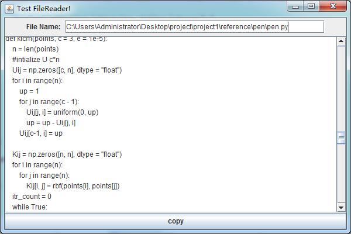

java进行文件读取操作,主要使用到节点流FileReader和处理流BufferedReader。 FileReader安照字符流读取文件，好处在于可以读取中文字符， BufferedReader是套在FileReader上的处理流，价值在于带缓冲，并且提供了readLine方法可以按行读取文件 程序中使用GUI界面来显示文件的内容
//:com/gui/start/OutputFile.java
package com.gui.start;
import java.awt.*;
import java.awt.event.*;
import javax.swing.*;
import java.io.*;
public class OutputFile extends JFrame {
private JButton copy = new JButton("copy"); //显示按钮
private JTextField filename = new JTextField(40);//文件名输入区域
private JTextArea out = new JTextArea();//文件内容显示区域
private JLabel label = new JLabel("File Name: ");
public OutputFile() {
setLayout(new BorderLayout());
out.setLineWrap(true);
out.setWrapStyleWord(true);
JScrollPane jsp = new JScrollPane(out);
JPanel jp = new JPanel();
jp.setLayout(new FlowLayout());
jp.add(label);
jp.add(filename);
add(copy, BorderLayout.SOUTH);
add(jsp, BorderLayout.CENTER);
add(jp, BorderLayout.NORTH);
copy.addActionListener(new ActionListener() {
@Override
public void actionPerformed(ActionEvent arg0) {
out.setText("");
String s = filename.getText();
FileReader fr = null;
BufferedReader br = null;
String temp;
try {
fr = new FileReader(s);
br = new BufferedReader(fr);
while((temp = br.readLine())!= null) {
out.append(temp + "\n");
}
br.close();
fr.close();
} catch(FileNotFoundException e) {
out.setText("File not found!");
} catch (IOException e) {
out.setText("Something wrong happened during reading task!");
}
}
});
filename.addActionListener(new ActionListener() {
@Override
public void actionPerformed(ActionEvent e) {
copy.doClick();
}
});
setDefaultCloseOperation(JFrame.EXIT_ON_CLOSE);
setSize(600, 400);
setLocation(300, 100);
setVisible(true);
setTitle("Test FileReader!");
}
public static void main(String[] args) {
// TODO Auto-generated method stub
new OutputFile();
}
}
GUI界面中为JButton和JTextField添加了相同的事件处理机制， JTextField的触发在之前讨论过，即回车键 由于文件内容较多，在JTextArea外加入了JScrollPane BufferedReader使用readLine方法按行读取文件时行尾的换行符不会读入。
程序的具体效果如下：
